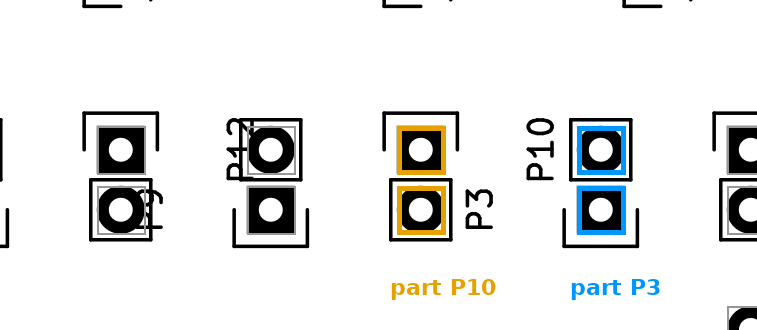

模型：dv1_E1_XXL_150k_lr1e-4（目前最好的 linker），只在 KiCad 板子上训练过，没见过任何 WACV 照片。
分数都是 exact pair：元件连到的文字框，正好是标它的那个框才算对。
KiCad 没有单独的 “test” 集。我们按 GitHub 仓库把 KiCad 板子分成 train 和 val：val 是 577 个仓库、1,369 个板面， 训练时一张都没见过（同一个仓库的不同版本也都在 val 里，不会一半在 train 一半在 val）。所以 KiCad val 就是 KiCad 上的“没见过的测试集”。 严格说它也用来挑模型（比如挑 lr），所以 WACV 才是真正的最终测试。
横轴从 85 % 开始，放大差别。密度 = 每平方厘米的元件数（KiCad 单位是毫米，所以能算真实面积）。
| 数据 | 板面 | 可连接元件 | 准确率 | precision | 错的元件 | 真 label 是最近的字 |
|---|---|---|---|---|---|---|
| KiCad val（全部） | 1,369 | 63,137 | 96.4 % | 97.6 % | 2,273 | 78.5 % |
| KiCad val，和 WACV 一样密 | 232 | 13,439 | 93.8 % | 95.4 % | 833 | – |
| WACV 干净 41 张 | 40* | 4,185 | 90.9 % | 92.2 % | 379 | 70.2 % |
* 41 张测试图里，ArduinoMega_Bottom 没有文字框，所以只算了 40 张；另有 3 张（ArduinoMega_Top、SystemAce_Bottom、XLVDSproSupply_Bottom2）一个可连接的元件都没有。它们都不影响分数。
从 KiCad val 全部到 WACV：96.4 % → 90.9 %，掉 5.5 个点。拆成两段：
密度（约 2.6 点）。KiCad 大多是稀疏的业余板，WACV 是密的工业板。只看和 WACV 一样密的 KiCad 板，已经掉到 93.8 %。 板越密，一个元件周围的候选文字越多，越容易连到邻居。
照片和设计文件的差别（约 2.9 点）。同样的密度下，照片上还是低 2.9 点。原因是：WACV 的框是人在照片上手画的，不像 KiCad 是精确的焊盘外形； 有的编号被元件挡住、印在别处或者干脆没印；照片有透视和压缩。一个直接的指标：真 label 恰好是离元件最近的文字，KiCad 是 78.5 %，WACV 只有 70.2 %。
每个错误分到四类之一（前三类算在“错的元件”里，第四类只影响 precision）：
| 类型 | 意思 | KiCad val | WACV 41 |
|---|---|---|---|
| 抢邻居 | 连到了另一个元件的 label | 833（37 %） | 142（37 %） |
| 空闲字 | 连到了一个不属于任何元件的文字（比如 TP、孔位、功能字） | 179（8 %） | 80（21 %） |
| 漏连 | 它的 label 印着，模型却输出 none | 1,261（55 %） | 157（41 %） |
| 多连 | 元件没印 label，模型却给它连了一个字 | 518 | 102 |
几个读数：
• 两边“抢邻居”都占 37 %，这是密板上最典型的错。WACV 的“空闲字”比例高很多（21 % 对 8 %），照片上有很多 KiCad 里没有的字被框成了文字。
• 错的元件里，模型选的字比真 label 离得更近的：KiCad 783 / 2,273（34 %），WACV 143 / 379（38 %）。也就是说三分之一的错，是模型“选了最近的”而真 label 在稍远处。
• 一对一规则（Hungarian）造成的错很少：模型第一选择其实是对的、但那个字被分给了别的元件，KiCad 53 个，WACV 17 个。
• WACV 的错误很集中：DigitalDiscovery 54、ATTIOT_Bottom 47、Arty_Bottom 32、Virtex6 32、ZTurn 30、Arty_Top 25，这 6 张图占 379 个里的 220 个（58 %）。每张图的数字在下面的表里。
WACV 图来自照片；KiCad 没有照片，是用设计文件的框画的：灰色 = 元件，橙色 = 文字和它的字符串。点卡片放大，左右键翻页。
正在载入错误卡片…
| 图片 | 可连接 | 准确率 | 错 | 抢邻居 | 空闲字 | 漏连 | 多连 |
|---|
你在 KiCad 卡片里看到的 P3 / P10，我回到原始设计文件查了（KiCad 4 格式，2016 年）。用 KiCad 自己的导出器画出真实丝印：

两个接插件的 label 在封装里都放在 “1 脚上方 5.1 mm”，设计者把两个元件一个转 90°、一个转 270°，没有再挪 label，结果两个字交叉了。 我们的数据提取没有错，KiCad 的 “真值” 也没错（元件 P3 确实叫 P3），但印出来的板子是误导的：看板子的人也会像模型一样连错。
为了统计这类情况，我定义：一个 label 离另一个元件比离自己的元件近至少半个元件大小（按框的边缘距离），就叫 “印得离别的元件更近”。 两个元件的 label 正好互相印到对方旁边，叫 “交叉”（P3 / P10 就是）。
| KiCad val | WACV 41 | |
|---|---|---|
| 印得离别的元件更近的 label | 4,194（6.6 %） | 413（9.9 %） |
| 其中交叉的 | 104 | 0 |
| 模型在这些 label 上的准确率 | 75.7 % | 59.1 % |
| 模型在其余 label 上的准确率 | 97.9 % | 94.4 % |
| 错的元件里，落在这些 label 上的 | 1,019 / 2,273（45 %） | 169 / 379（45 %） |
你的感觉对了一半。两边都有 45 % 的错误落在这类 label 上，模型在它们上面的准确率掉到 76 % / 59 %。但它们不全是 “label 错了”：
• KiCad 里多是丝印没整理：label 交叉、几个字叠在一起、离元件很远。这是设计者的问题，真板子上也会这样印，但一个读板子的人没法连对。 训练集里也有：KiCad train 108 万个 label 里有 5.3 %（57,321 个）是这种，老格式文件（KiCad 4/5，2017 年及以前）最多，6.8 %，新文件约 4–5 %。
• WACV 里多是正常的印法：一排元件上方印一张 “label 表”（Arty、ZTurn 那种 R21 R36 R32… 的一行行字），或者用引线指过去的 label。 这些按位置就是离别的元件更近，但规律是有的，模型应该学会。
下面两个标签页各放了 64 个例子（48 个模型错的，16 个模型对的）。
对每个漏连，看模型自己的第一选择（一对一分配之前，概率最高的那一项）：
| 情况 | KiCad val | WACV 41 |
|---|---|---|
| 模型本来就觉得 “没有 label”（第一选择是 none） | 1,195（95 %） | 131（83 %） |
| 其中差一点就连上（none 和真 label 的对数概率差 < 1） | 363 | 50 |
| 模型想连真 label，但那个字被一对一分配给了别的元件 | 28 | 9 |
| 模型想连另一个字，那个字被别人拿走，只好 none | 38 | 17 |
所以漏连主要不是一对一规则造成的，而是模型自己判断 “这个元件没印 label”。这些元件和连对的元件比：
| KiCad 连对 | KiCad 漏连 | WACV 连对 | WACV 漏连 | |
|---|---|---|---|---|
| label 到元件的边缘距离（中位数，单位 = 板上元件的中位尺寸） | 0.05 | 0.53 | 0.08 | 0.55 |
| label 离元件超过 1 个元件大小 | 5 % | 33 % | 5 % | 44 % |
| label 印得离别的元件更近 | 5 % | 38 % | 6 % | 44 % |
| 大元件（≥ 2 倍中位尺寸） | 14 % | 29 % | 15 % | 35 % |
| 接插件 + IC | 18 % | 32 % | 14 % | 36 % |
读法。连对的元件，label 几乎都贴着它（中位距离 0.05）。漏连的元件，label 离得远，或者离别的元件更近，或者元件本身很大（接插件、IC 的 label 常印在离本体较远的地方）。 模型拿不准的时候选 none，是因为训练数据里本来就有 18 % 的元件没有可见的 label（KiCad train：132 万个元件、108 万条连线），“附近没有字就是没印” 是它学到的常见答案。
不重训，只在一对一分配前给每个元件的 none 分数加一个偏置（负数 = 更愿意连）：
| 偏置 | KiCad 准确率 | KiCad precision | KiCad F1 | WACV 准确率 | WACV precision | WACV F1 | WACV 漏连 |
|---|---|---|---|---|---|---|---|
| 0（现在） | 96.4 % | 97.6 % | 0.970 | 90.9 % | 92.2 % | 0.916 | 157 |
| −0.5 | 96.7 % | 97.4 % | 0.970 | 91.7 % | 91.8 % | 0.917 | 117 |
| −1 | 96.9 % | 97.3 % | 0.971 | 92.0 % | 91.2 % | 0.916 | 98 |
| −1.5 | 97.0 % | 97.2 % | 0.971 | 92.3 % | 90.6 % | 0.915 | 75 |
| −2 | 97.1 % | 97.1 % | 0.971 | 92.6 % | 90.3 % | 0.915 | 65 |
−1.5 是 KiCad val 上 F1 最好的偏置（按 KiCad 选，不看 WACV）。准确率涨 1.4，precision 掉 1.5，F1 不变：漏连变成了一部分 “多连”。
空闲字。WACV 的 80 个空闲字错误里，连到的字多是 R（23）和 C（22），TP / TPG 只有 6 个。这些 R / C 字属于标注里没画框的元件（比如没焊的空焊盘），不是 TP、JP 这类测试点。KiCad 抽样里 TP、JP 更多。
WACV 一共 45 张有标注的照片。项目一开始（2026-10-05）就定了规则：拿出 3 张做 dev（开发集），其余 42 张（现在去掉 ML365_Bottom 是 41 张）做 test（测试集）。
这 3 张是 ML450_Top1、RPI3B_Top、DuetWIFI_Top，来自 3 块不同的板子。
为什么要分。任何需要“调”的东西，比如规则 baseline 的距离阈值、“多远就算没有 label”，只能在 dev 上调。test 只用来报最后的数字，从不拿来调参。 如果在 test 上调，分数会偏高，因为它等于偷看了考题。
这 3 张现在的用处。B1–B6 这些规则 baseline 的阈值是在 dev 上定的。transformer 只在 KiCad 上训练，3 张 dev 图对它没有参与训练，只是顺便报一下分。 dev 图也一起清洗了（ML450_Top1、DuetWIFI_Top 都有改动），但从不算进 test 分数。
问题。3 张图太少，选不出模型。XL 和 XXL 在 dev 上分数一样（87.7 % 对 87.8 %），在 test 上却差 2.7 个点。 所以从 2026-10-12 起，挑模型（比如挑哪个 lr）用的是 KiCad val 的 1,369 个板面，不再看 dev。